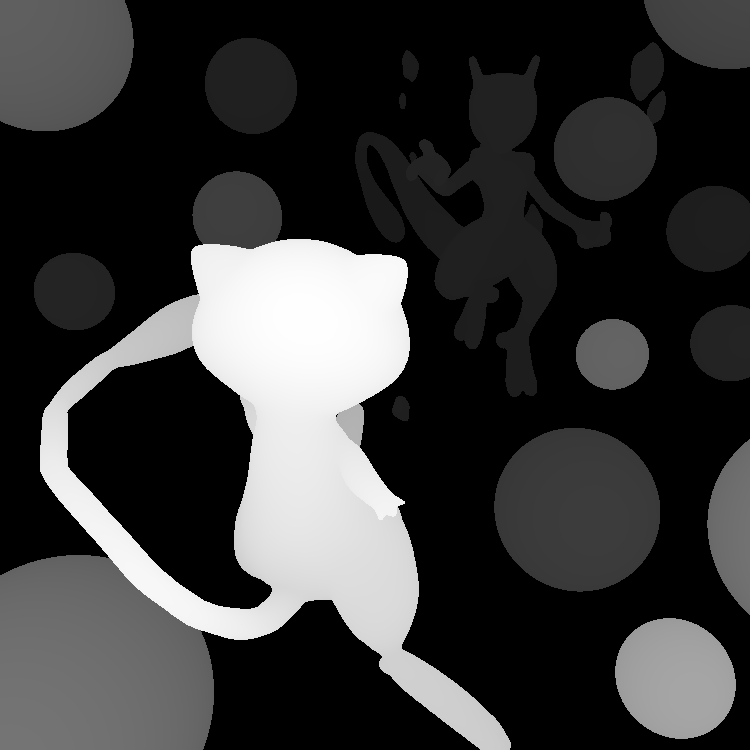
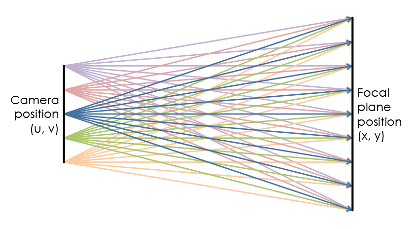
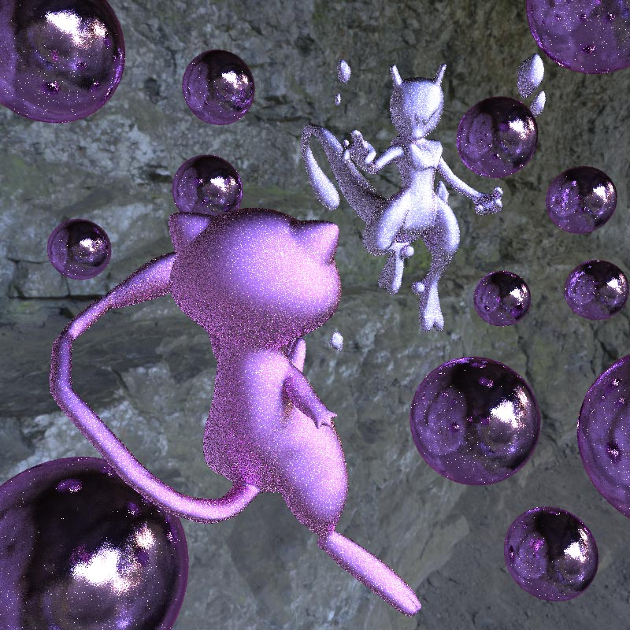
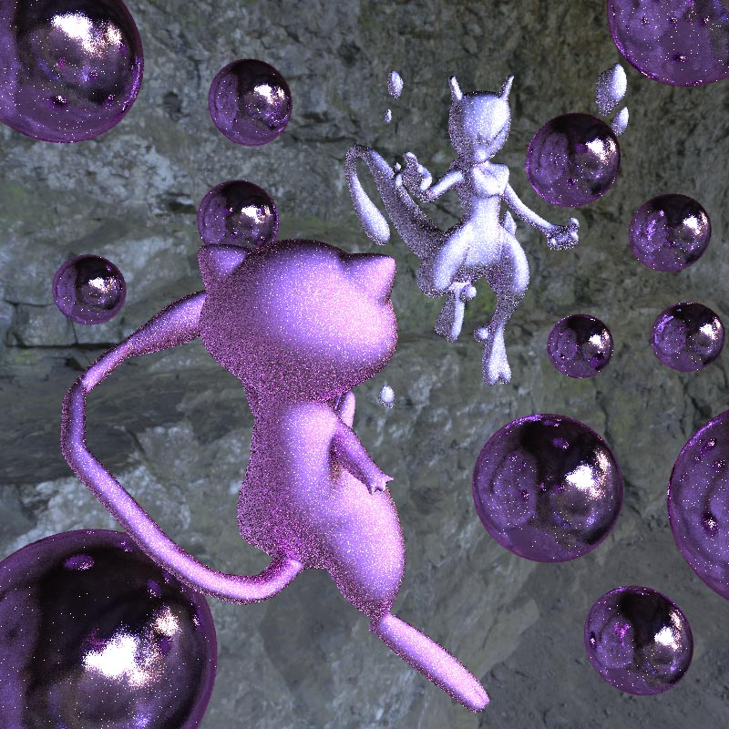
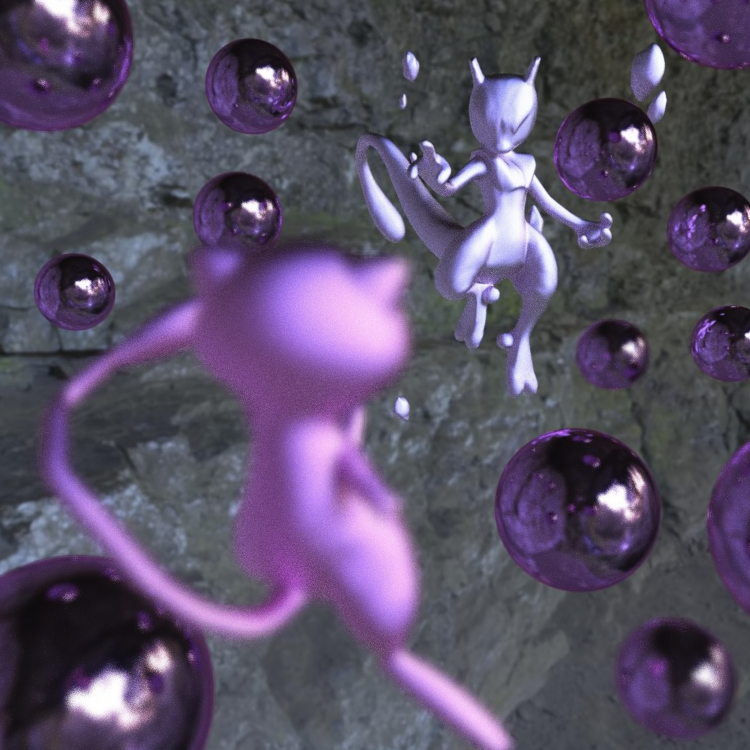
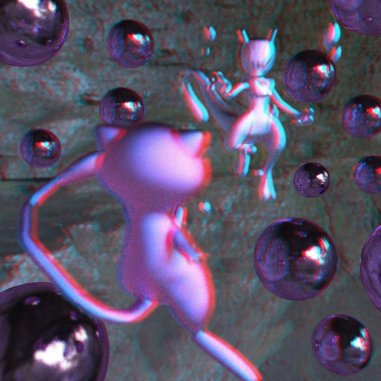
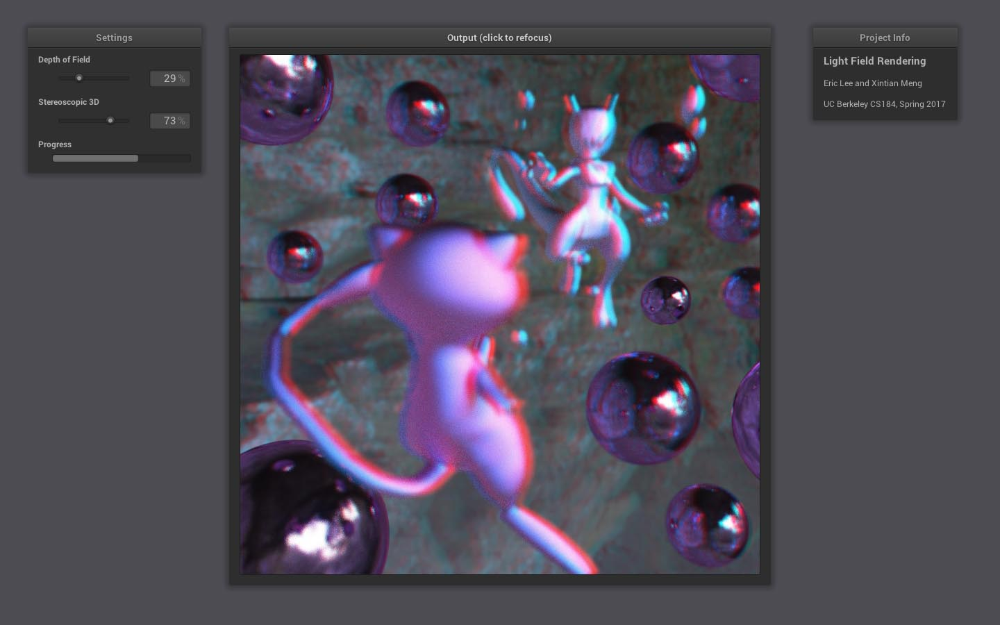

Our project involves the creation and processing of four-dimensional light fields. First, we extended our Project 3 raytracer to render one scene from multiple different perspectives, resulting in a 2D array of sub-aperture images that collectively represents the light field. Then, we created an interactive GUI that processes the light field and generates images with variable focal distance, depth of field, and stereoscopic 3D effects.
Our raytracer builds upon the Project 3 raytracer with two new “modes,” which we can use to generate our desired output renders. We used additional command-line flags in order to specify modes and extra parameters.
Mode 1: Depth Map. Our first mode renders a depth map of our scene: an image specifying the distance of the mesh surfaces from the viewpoint. Light pixels represent surface points that are close to the camera, and dark pixels represent surface points that are far from the camera.
In more technical terms: The luminosity of each pixel is inversely proportional to the point’s perpendicular distance from the camera’s image plane. These luminosity values are normalized such that the closest point in the scene is pure white (255), and points infinitely far away are pure black (0). As such, a pure gray value (127.5) would represent a point that is twice as far from the camera plane as the aforementioned closest point.
Our depth map, in conjunction with a standard 2D render, could be used to mimic depth of field effects and stereoscopic 3D. However, for our project, we use the depth map exclusively for interactive refocusing in our GUI.
Mode 2: Light Field Renderer. Our second mode renders the actual images that make up our light field.
In our light field, each pixel represents the radiance along a ray from a (x, y) point on the focal plane to a (u, v) point on the camera plane. Each sub-aperture image is identified by a (u, v) position and contains the radiance of all rays that enter that point from each (x, y) position. As such, in order to render a sub-aperture image, we need to specify two additional parameters to the raytracer: the (u, v) position, and the distance to the focal plane.
We define the distance to the focal plane as twice the distance to the closest point in the scene. This distance geometrically optimizes our light field renders to minimize the amount of cropping required when using the shift-and-add algorithm in our GUI.
In order to facilitate rendering, our raytracer accepts and iterates over a range of u and v values. This allows us to render hundreds of sub-aperture images at a time without human input.
In order to best show off the benefits of our light field, we created our own 3D scene to render, with many objects at varying distances from the camera. The scene uses models from Thingiverse (source 1, source 2), and takes advantage of microfacet materials and an environment light (source).
The fully-rendered light field consists of a 17 x 9 array of sub-aperture images, each one at 800 x 800px resolution. We used fairly low rendering settings, with only 4 samples per pixel and 4 samples per light. We used a (u, v) displacement of 2px between neighboring sub-aperture images.
On the instructional machines, it only took about an hour or two to render all 153 images. After doing so, we used Photoshop to compile them into a single compressed JPEG image; this helps save on disk space and GUI loading times. Below are some of the sub-aperture images from the full light field.
|
|
|

|
|

|
|
|
Our interactive GUI is built in Python. It uses NumPy and the Python Imaging Library (PIL) to generate output images, and NanoGUI to present the user interface.
Generating Images. There are two effects we decided to pursue when processing our 4D light field into 2D images. The first involves creating images with variable focus using the shift-and-add algorithm. In our implementation, we select a NxN subset of the sub-aperture images to average. Instead of taking the unweighted mean of all NxN images, we take a weighted average based on a 2D Gaussian kernel; this gives more weight to sub-aperture images near the center of our NxN patch. This approach helps reduce artefacts and aliasing, similar in concept to how a Gaussian blur is more effective than a simple box blur.
|
|

|
|
The second effect we decided to pursue involves creating stereoscopic 3D images that can be viewed with red-cyan 3D glasses. To create the stereoscopic 3D effect using our light field, we effectively perform the shift-and-add algorithm twice. For each eye, we use a different NxN patch of sub-aperture images; the left eye uses sub-aperture images with lower/negative u values, and the right eye uses those with higher/positive u values. Finally, we combine the two images by using the red channel of the left image and the green/blue channels of the right image. This causes each eye to see only the intended image when wearing 3D glasses.
|
|

|
User Interface. Our user interface contains two sliders, one to control depth of field and the other to control stereoscopic 3D strength. It also contains an image panel, which serves two purposes: Not only does the panel display the output image, but it also accepts mouse clicks for image refocusing. Using a mouse button handler and a depth map, the GUI can refocus on whatever object the user clicked on.
Whenever the user clicks on the image or adjusts one of the sliders, the interface sends all three parameters (depth of field, stereoscopic 3D strength, focal distance) to the image generator—which processes the light field, saves the image, and reloads the GUI to display the new image. Processing times vary, but in general, each image takes no more than a few seconds to generate—less if there is no stereoscopic 3D, or if the depth of field is particularly long.
Surprisingly, we encountered the most problems trying to make the GUI work. For instance, the NanoGUI image panel can only load images directly from files (as opposed to from the program itself), so we are forced to export our output images to the filesystem to make them appear in the GUI. While our GUI code works fine, we certainly made a few unusual design decisions to get there.
The lessons we learned during this project mostly involve gaining a better understanding of light fields and the mechanics behind making them work well. By performing the geometric calculations needed to optimally render the sub-aperture images, we learned a lot about the entire rendering process.
Our results have been included as images above, alongside our technical details. We are very pleased with the quality of the final output images, as well as the fast image processing speed.
Ren Ng’s lectures on light fields gave us a base understanding of light fields and the work we would need to do to generate/process them. Beyond that, we did not actually use any other academic references; most technical decisions were made based on either intuition or personal calculations.
Both of us met up several times for extended work and pair programming sessions, so a lot of the work is difficult to separately attribute. That being said, Eric generally led the work sessions and made the key design decisions, whereas Xintian worked on project writeup components.